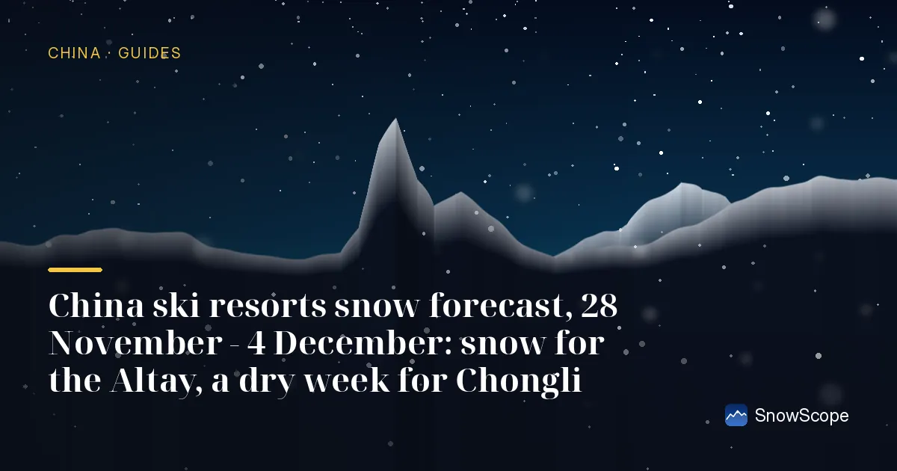
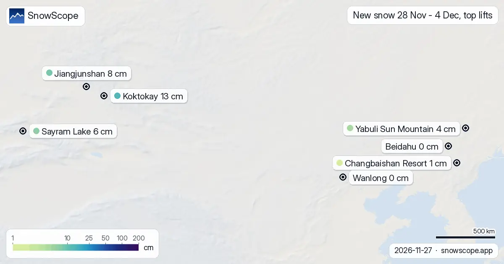

China ski resorts snow forecast, 28 November - 4 December: snow for the Altay, a dry week for Chongli
The next week will widen the gap between China's two ski regions. The forecast brings new snow to the Altay in northern Xinjiang, with about 13 cm at the top of Koktokay and about 8 cm at Hemu and Jiangjunshan between 28 November and 4 December 2026. Around Chongli and Beijing it stays dry and cold, which is bad news for natural snow but good news for snowmaking.
See the live snow forecast for China in the SnowScope appSnow depth, powder alerts and the 3D map, free.
How we built this forecast
For 14 of the best-known ski areas we took an ensemble of weather forecasts for the height of each top lift and added up the new snow from 28 November to 4 December. We give the middle forecast, and the lowest and highest ones to show how sure it is. When the three are close, the forecast is solid; when they are far apart, treat the middle number as a rough guide.

Xinjiang: more snow for the Altay
Koktokay, the highest ski area on our list with its top at 3,077 m, gets the most: about 13 cm in the middle forecast, between 2 and 18 cm. Hemu, which already has the deepest natural snow in China, could add about 8 cm, between 1 and 11 cm. Jiangjunshan, above Altay city, could also get about 8 cm, between 1 and 10 cm.
In the Tianshan, Sayram Lake could get about 6 cm at its top lift, while the Silk Road ski area near Urumqi gets only about 1 cm. It will be very cold up high: the coldest forecast night at the top of Koktokay and Hemu reaches about -30 °C, so the new snow will be light and dry.
Chongli and Beijing: dry and cold
For Wanlong, Genting, Thaiwoo, Fulong and the Yanqing alpine centre the middle forecast is 0 cm for the whole week, and even the highest forecast shows no new snow. Nights at the top lifts fall to about -15 °C at Wanlong, Genting, Thaiwoo and Yanqing, and about -13 °C at Fulong.
For skiers this is not a bad week. Cold, dry nights are exactly what snowmaking needs, and the big Chongli resorts can open more runs on machine snow. Just do not expect powder here before December.
Jilin and Heilongjiang: a little snow at Yabuli
In the north-east, Yabuli Sun Mountain is the only ski area on our list with a real chance of snow: about 4 cm, between 0 and 7 cm. Changbaishan could get about 1 cm. Beidahu and Songhua Lake near Jilin city stay dry in the middle forecast, with at most 1 cm at Beidahu in the highest one. The coldest nights reach about -18 °C at the top of Beidahu and -16 °C at Yabuli Sun Mountain.
Why the two regions are so different
Northern Xinjiang and the north-east of China share the same latitude, but not the same weather. The Altay and the Tianshan catch the moist westerly air that crosses Central Asia, and in late autumn that air often brings light snow to the mountains, which the deep cold then keeps. The north-east sits under the dry winter monsoon: cold air comes down from Mongolia and Siberia, the sky is clear for days, and real snow needs a storm from the south or the sea.
That is why Chongli can be very cold and still bare, and why its ski areas invest so much in snowmaking. It is also why a single storm can change the picture there quickly: when one comes, it is worth watching the map.
What it means for a trip
If you want natural snow in the first days of December, the Altay is the safe choice: Hemu and Koktokay already have the deepest base in the country, and the week adds to it. If you ski near Beijing, plan for groomed machine-snow runs and pick a cold weekday to avoid the queues. We will follow the snow every day on the map and in new posts, in English and in Chinese.
Tips for skiers
- Altay (Hemu, Koktokay, Jiangjunshan): the best bet for natural snow in early December.
- Chongli and Yanqing: dry week, skiing on machine snow; check the open runs before you go.
- At about -30 °C at the top, frostbite comes fast: cover your face and take breaks indoors.
- Forecasts a week ahead can still change: check again the evening before you travel.
More maps (external sites)
References and credits
- SnowScope live snow map of China snowscope.app/
About these numbers
Snow today: the natural snow on the upper slopes of each ski area, from the SnowScope snow map of 27 November 2026 (the same numbers as on the map). Coming snow: an ensemble of weather forecasts for each ski area's top lift, given as the lowest, middle and highest forecast.
Cite this report
For research, teaching or the press: the numbers and charts are free to reuse under CC BY 4.0 with this citation.
SnowScope (2026), China ski resorts snow forecast, 28 November - 4 December: snow for the Altay, a dry week for Chongli, https://snowscope.app/blog/en/2026/11/china-ski-resorts-snow-forecast-28-november-4-december-2026.html, accessed 2026-11-27
SnowScope (Atlas Labs). (2026, November 27). China ski resorts snow forecast, 28 November - 4 December: snow for the Altay, a dry week for Chongli. SnowScope snow reports. https://snowscope.app/blog/en/2026/11/china-ski-resorts-snow-forecast-28-november-4-december-2026.html
BibTeX
@misc{snowscope2026chinaskiresortssnowforec,
author = {{SnowScope (Atlas Labs)}},
title = {China ski resorts snow forecast, 28 November - 4 December: snow for the Altay, a dry week for Chongli},
year = {2026},
month = nov,
howpublished = {\url{https://snowscope.app/blog/en/2026/11/china-ski-resorts-snow-forecast-28-november-4-december-2026.html}},
note = {Published 2026-11-27 17:09 UTC; accessed 2026-11-27}
}· CC BY 4.0 · Methods, data and tools →
Follow China
Free: a message when fresh snow is coming, and the forecast every morning.
More snow reports

Little and Big Cottonwood canyons and Park City for Saturday 28 and Sunday 29 November: today's snow, the weekend top-up, and how this start compares with a normal year.

Mt. Hood shows how much a few hundred feet matter: today's snow at Timberline, Meadows, Skibowl and Mt. Bachelor, the next three days, and what December usually brings.